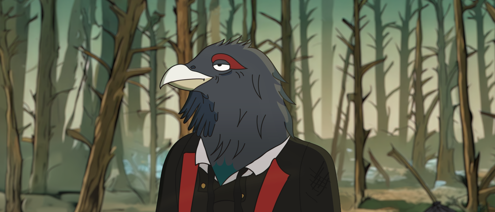
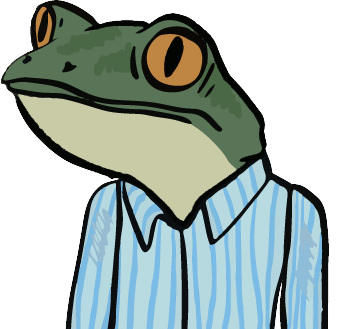
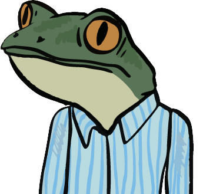
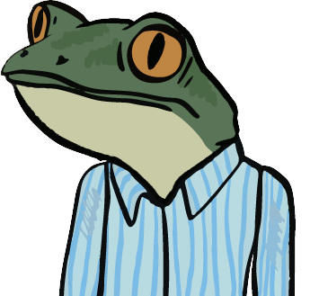

Unser Projekt ist eine 2D-Animation, die einen Trailer für eine Serie präsentiert. Im Mittelpunkt steht ein depressives Auerhuhn, eine gefährdete Art des Schwarzwaldes. Der Trailer spielt in einem post-apokalyptischen Schwarzwald und soll die Gefährdung anderer Arten verdeutlichen. Serien wie „BoJack Horseman“ und „Rick and Morty“ sind die Inspirationsquelle.

Problemstellung
Hier kommt der Fließtext zur Problemstellung. (Beispieltext)
Entwurfsphase
Hier kommt der Text zur Entwurfsphase. (Beispieltext)

Um uns klar zu werden, wie unsere Animation und die Charaktere aussehen sollen, haben wir uns Inspiration aus dem Internet geholt. Hier haben wir sowohl auf den Art-Style geachtet und uns von Serien wie „Bojack Horseman“ inspirieren lassen aber auch im lokalen Bereich geschaut wie zum Beispiel die Art von Kleidung unsere Figuren sein sollen.
Hintergründe
Uns war es sehr wichtig, dass die Umgebung der Szenen passen, weshalb wir uns viel Zeit bei der Auswahl der Hintergründe gemacht haben. Dies haben wir mithilfe der Ai Funktion in Photoshop zustande gebracht. So konnten wir zeitsparend viele Hintergründe erstellen und sie individuell an unsere Wünsche anpassen und später weiterbearbeiten.
Animation
Bei der Animation haben wir mit Adobe Character Animator gearbeitet. Zuerst musste man den Charakter riggen, um später jegliche Körperbewegungen durchführen zu können. Danach fügt man den Character der Szene hinzu und passt ihn an. Hierbei kann man zum einen, den Ort und die Größe transformieren, allerdings auch den Charakter in die richtige Position bringen. Dies ist möglich wenn man an bestimmten Körperteilen ein „Ziehbar“ Verhalten hinzufügt
Post-Produktion
Die Post-Produktion spielte eine sehr große Rolle, da es unser Projekt so richtig zum Leben erweckt hat. Angefangen mit dem Animieren der Charaktere in Adobe Character Animator, danach den passenden Hintergrund zur Szene mit der animierten Figur verbinden und zuletzt die beiden Teile aufeinander mit Color-Grading in After Effects aufeinander anpassen.
Information zum Medium bzw Technisches Setup
Um unser Projekt zu erstellen haben wir größtenteils mit der Adobe Cloud gearbeitet. Am meisten verwendeten wir die Programme Adobe Illustrator, Character Animator, Photoshop, After Effects, Media Encoder aber auch Programme wie Audition.
Wir nutzten leistungsstarke Computer und hochauflösende Bildschirme für detaillierte und dynamische Animationen. Der Workflow umfasst Storyboarding, Layout, Zeichnen der Charaktere, riggen und animieren der Charaktere, Audiobearbeitung und Anpassung des Werks.


 



 (1).jpg)